小D教練的講稿 · 47 張投影片 · 慢慢來，比較快
各位夥伴午安，歡迎來到「AI 開機日」。今天這一個小時，我要帶大家跟上 AI 那班車。
先說好，今天不考試、不寫程式、不背專有名詞，只要你會滑手機，就一定學得會。
送大家今天的第一句口頭禪：「慢慢來，比較快。我們一起來玩！」跟不上沒關係，我會等大家。
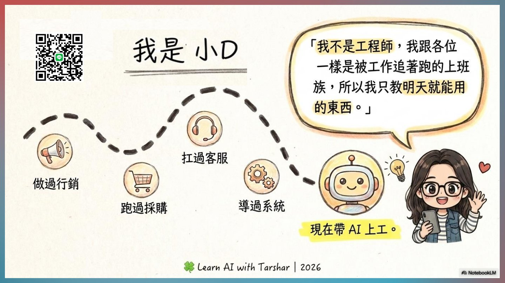
簡單自我介紹，我是小D。我做過行銷、跑過採購、扛過客服、也導入過系統，現在的工作就是帶著 AI 一起上工。
我要先跟各位掛保證：我不是工程師，我跟大家一樣，是每天被工作追著跑的上班族。所以我今天只教一件事，就是你明天上班就能用得到的東西。
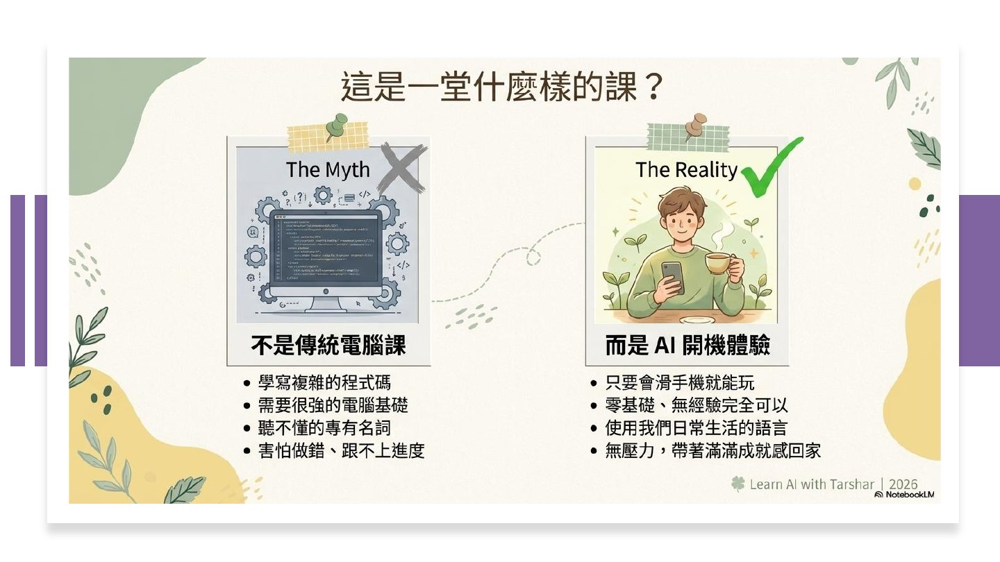
先幫大家定心。這堂課不是傳統的電腦課，不用學寫程式、不用很強的電腦底子，也不會丟一堆聽不懂的名詞讓你怕做錯、跟不上。
這是一場「AI 開機體驗」：會滑手機就能玩、零基礎完全沒問題、全程用生活的白話，目標是讓你沒壓力、帶著成就感回家。
其實啊，AI 早就住進我們的生活了。你手機拍照自動修圖、用 Google 搜尋、打去客服聽到的語音系統，背後都有它的影子。
只是「AI」這兩個字聽起來還是有點遠：聽得多、看得少、不知道從哪裡開始用。今天，我們就把它從『聽過』變成『你會用』。
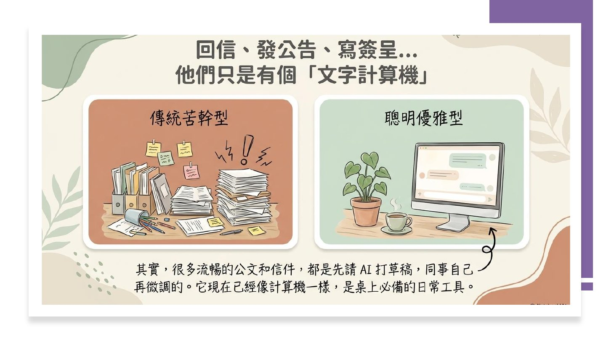
那 AI 到底是什麼？最好懂的講法是：它就是一台「文字計算機」。
回信、發公告、寫簽呈，以前我們苦幹實幹從零打字；現在你會發現，很多寫得很順的公文和信件，其實都是先請 AI 打草稿，同事自己再微調出來的。它已經像桌上的計算機一樣，是日常必備的工具了。
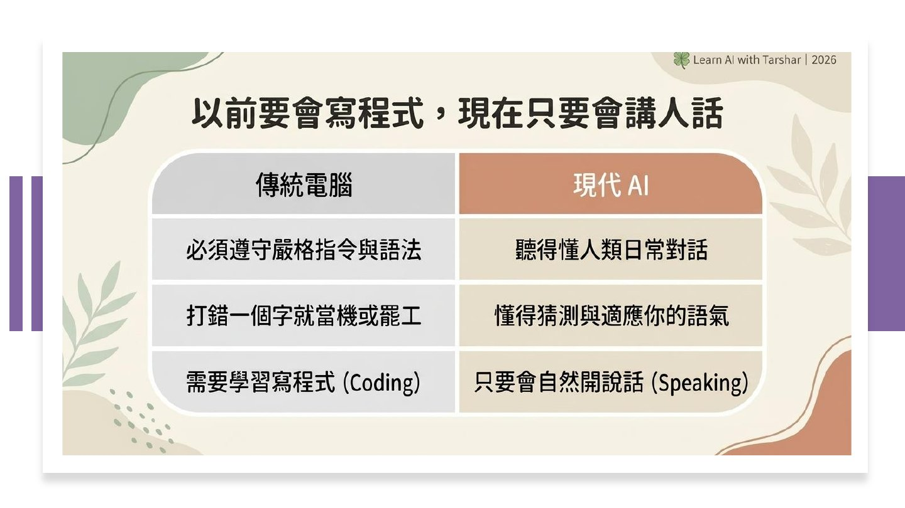
為什麼現在人人都能用？因為遊戲規則變了。
以前的電腦很龜毛：要遵守嚴格的指令跟語法，打錯一個字就罷工，你得會寫程式（Coding）。現在的 AI 不一樣：它聽得懂人話、會猜你的意思、還會配合你的語氣。你只要會自然開口說話（Speaking），就會用它。
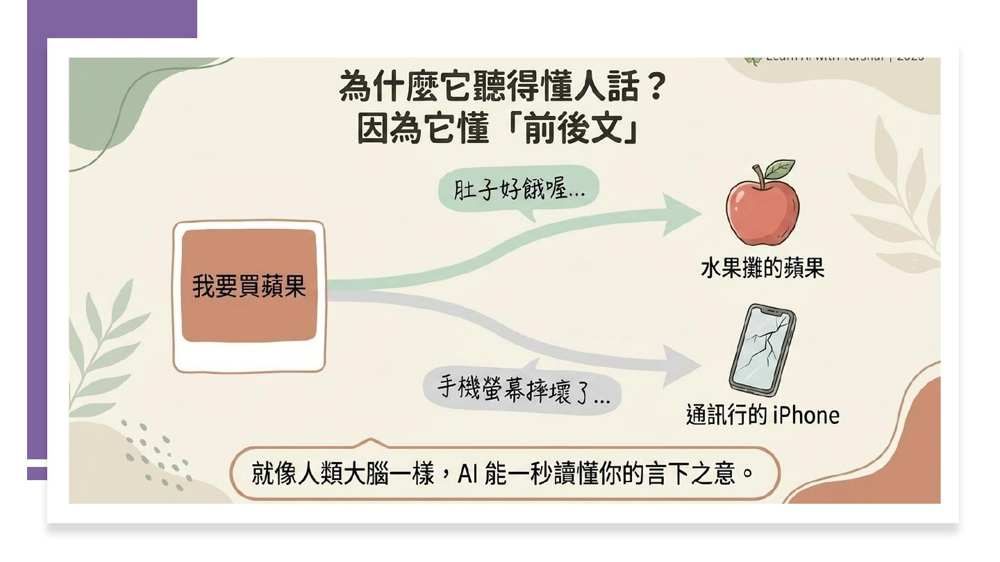
它為什麼聽得懂人話？因為它懂「前後文」。
舉個例子，同樣一句「我要買蘋果」：如果你前面說「肚子好餓喔」，它知道你要的是水果攤的蘋果；如果你說「手機螢幕摔壞了」，它就知道你指的是通訊行的 iPhone。就像人腦一樣，把背景講清楚，它一秒就懂你的言下之意。
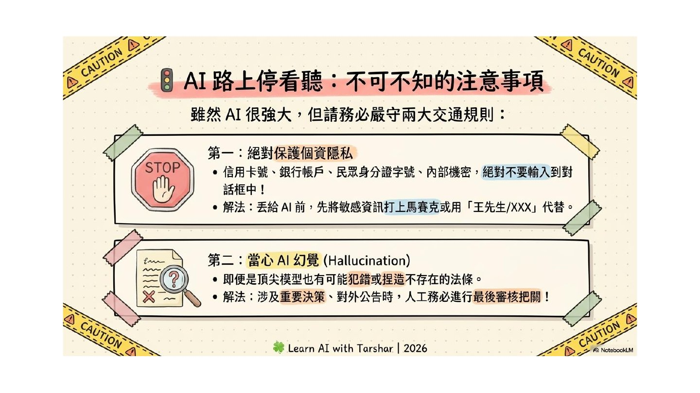
接下來這一頁最重要，公部門的夥伴一定要記住兩條紅線。
第一，絕對保護個資。信用卡號、銀行帳戶、民眾的身分證字號、內部機密，千萬不要打進對話框。要丟給 AI 之前，先打馬賽克，或用「王先生」、「XXX」代替。
第二，小心 AI 幻覺。再厲害的 AI 也可能一本正經地捏造不存在的法條。所以只要牽涉到重要決策、對外公告，最後一定要由人工審核把關。
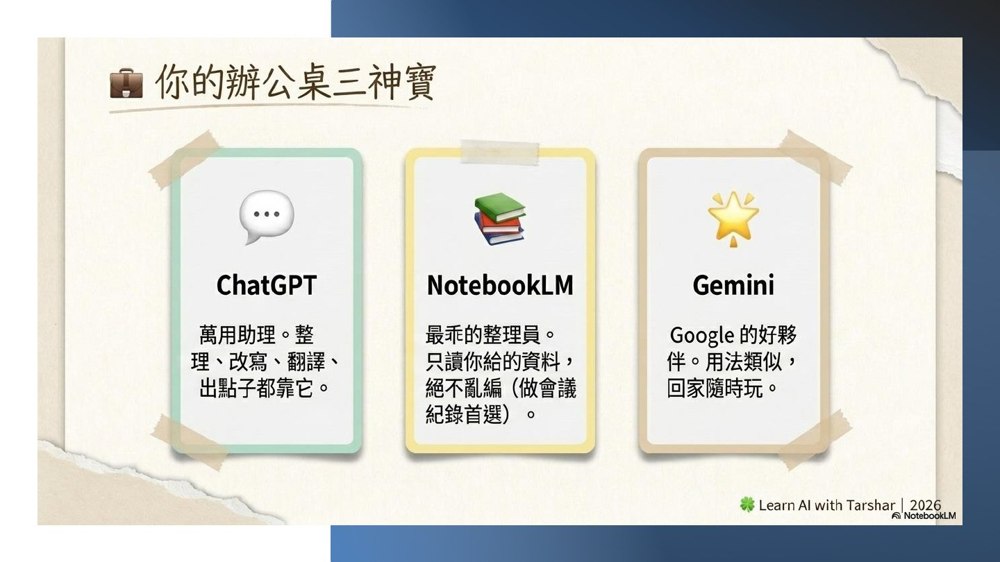
來認識你辦公桌上的「三神寶」，一句話記住就好。
ChatGPT是萬用助理，整理、改寫、翻譯、想點子都靠它；NotebookLM是最乖的整理員，只讀你給的資料、絕不亂編，做會議紀錄首選；Gemini是 Google 的好夥伴，用法很像，回家隨時可以玩。今天我們主玩 Gemini 跟 NotebookLM。
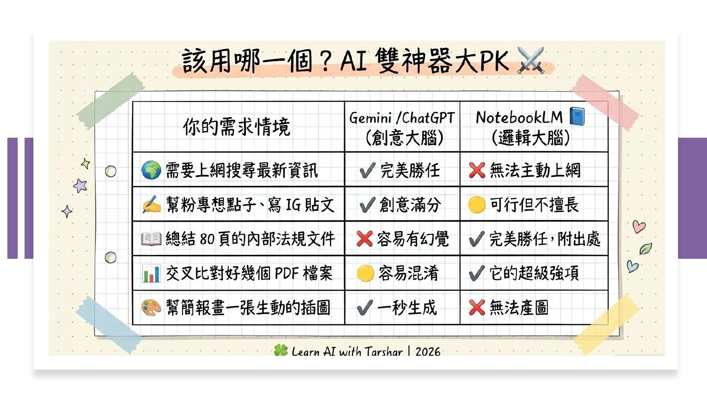
那什麼時候用哪一個？記住一句話：「創意找 Gemini，讀資料找 NotebookLM。」
Gemini／ChatGPT 是創意大腦：上網查最新資訊、想點子寫貼文、一秒生圖都很強，但總結長文件容易有幻覺。NotebookLM 是邏輯大腦：總結幾十頁文件、交叉比對多份 PDF 是它的超強項，還會附出處；缺點是不能上網、不能產圖。
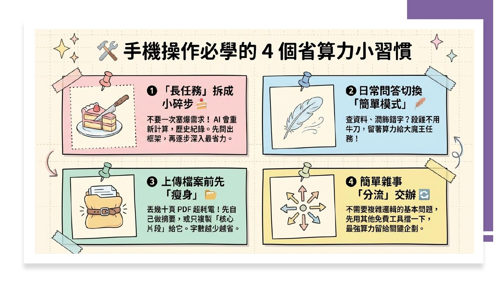
因為免費版有額度，我教大家四個「省算力」的小習慣，讓你用得久一點。
第一，長任務拆小步：先問框架，再逐步深入最省力。第二，日常問答切簡單模式：查資料、潤錯字，殺雞不用牛刀。第三，上傳檔案前先瘦身：先自己做摘要、或只貼核心片段，字越少越省。第四，雜事分流：簡單問題先用其他免費工具擋一下，把最強的算力留給最關鍵的企劃。
好，理論講完，我們動手玩第一站，召喚你的 Gemini 小助手。
請拿起手機相機，掃描投影片上的 QR Code，然後用你的 Google 帳號登入就好。
這裡我特別建議：用「瀏覽器版」，不要下載 App。瀏覽器版的功能最完整。
登入好了，接下來跟著我跑三個 AI 任務：破冰、做會議記錄、回覆民眾。
這三招都是公務現場用得到的。記住，不用寫程式、會講話就會用，跟著教練走一遍就好，做不完美沒關係。
任務一，破冰之旅，這一關「動口不動手」。
第一次接觸 AI 不用緊張，我們先讓它自我介紹，用台灣口語、三句話打招呼就好。
不會打字的夥伴，點那個麥克風，用講的就可以了！
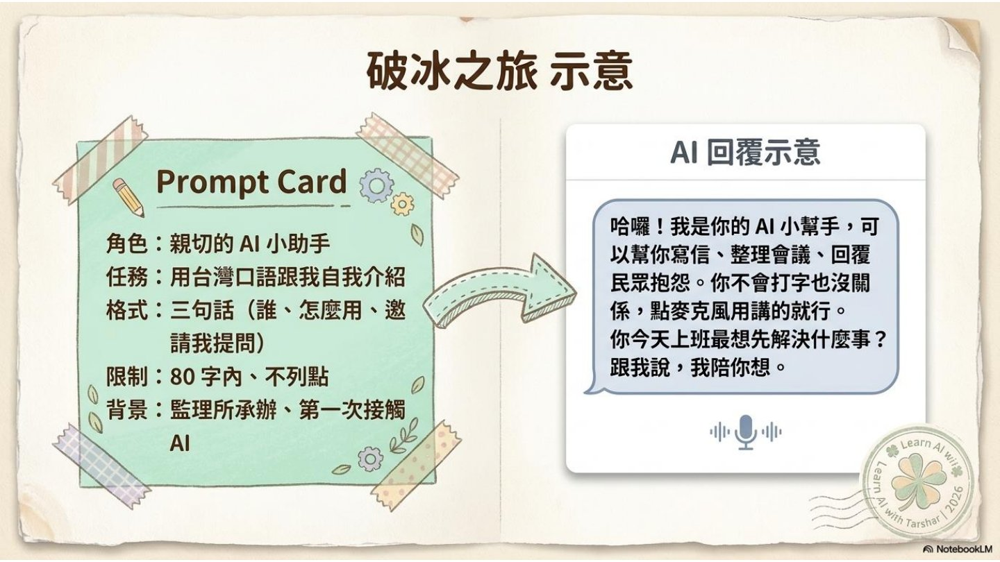
給大家一張「提示詞配方」，照著念給 AI 聽，它就會像新同事一樣跟你打招呼。我們現場用語音念念看。
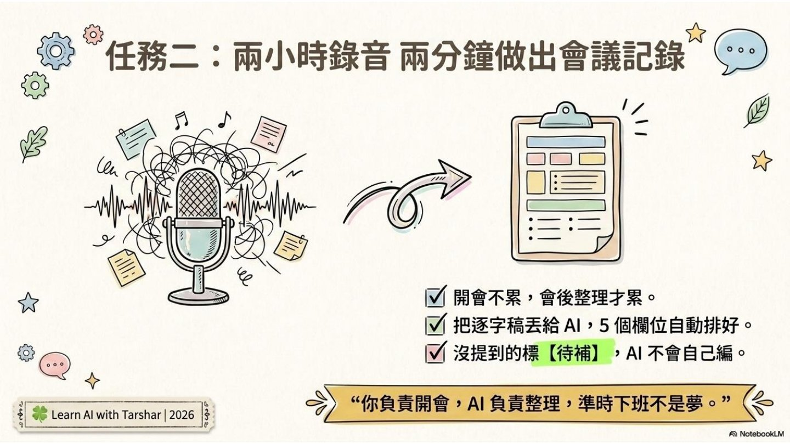
任務二，會議記錄。大家有沒有同感：開會不累，會後整理逐字稿才累。
現在把錄音的逐字稿丟給 AI，它會自動排好五個欄位。最棒的是，逐字稿裡沒提到的，它會標【待補】，不會自己編。你負責開會，AI 負責整理，準時下班不是夢。
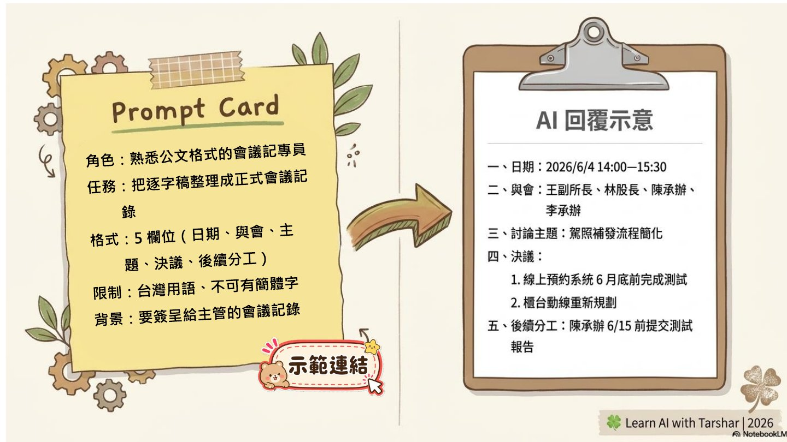
把逐字稿貼上去，再加上這張配方，AI 就會整理成可以簽呈的正式會議記錄。我貼一段示範給大家看。
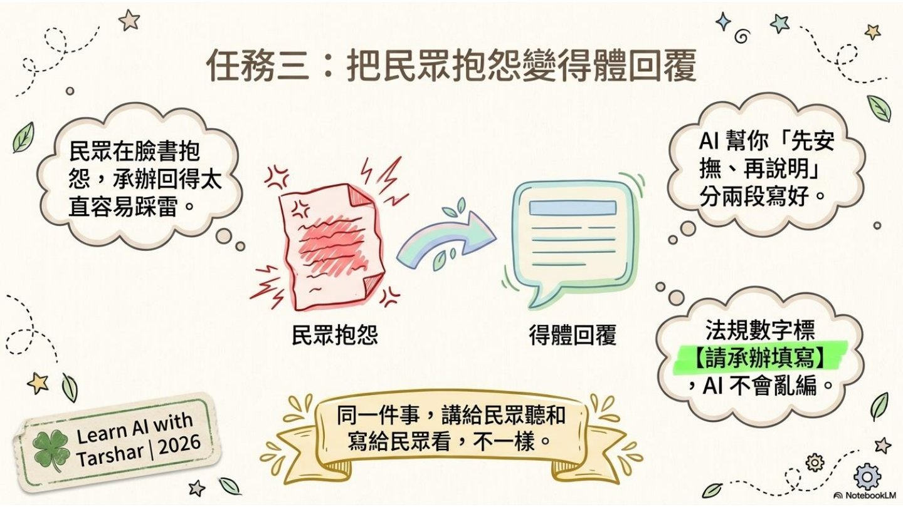
任務三，把民眾的抱怨變成得體的回覆。
民眾在臉書上抱怨，承辦如果回得太直，很容易踩雷。AI 可以幫你「先安撫、再說明」分兩段寫好。法規數字它會標【請承辦填寫】，不會亂編。同一件事，講給民眾聽、和寫給民眾看，是不一樣的。
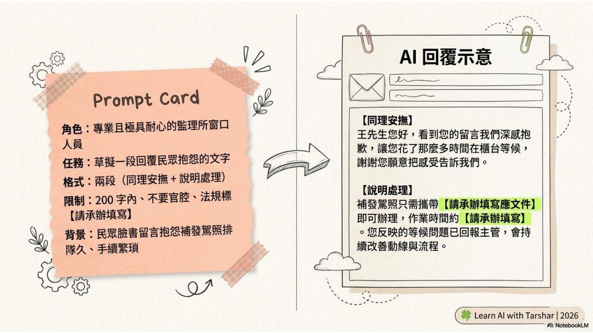
用這張配方，AI 會草擬出「同理安撫＋說明處理」的兩段式回覆，法規的地方會留白給你填。
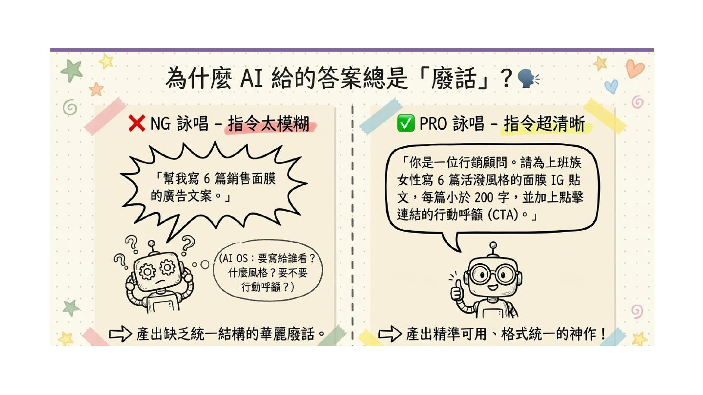
玩到這裡，有人可能會問：為什麼 AI 給我的答案都是「廢話」？
答案很簡單：指令太模糊，它只能用猜的，產出一堆華麗但沒用的廢話；指令一旦清楚，它就能給你精準、格式統一的好成果。我們對比一下這兩種問法。
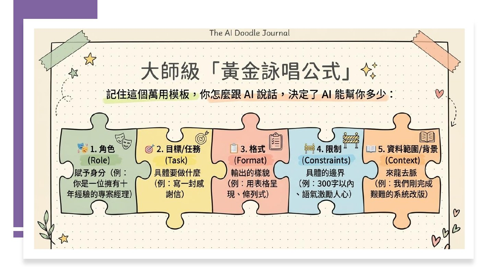
那要怎麼把話講清楚？送大家一個萬用模板，「黃金詠唱公式」，記住這五個要素就好：
一、角色：給它身分，例如「你是一位有十年經驗的專案經理」。二、任務：具體要做什麼，例如「寫一封感謝信」。三、格式：要長什麼樣，例如「用表格、條列式」。四、限制：邊界，例如「300 字內、語氣激勵」。五、背景：來龍去脈，例如「我們剛完成系統改版」。
你怎麼跟 AI 說話，決定了它能幫你多少。
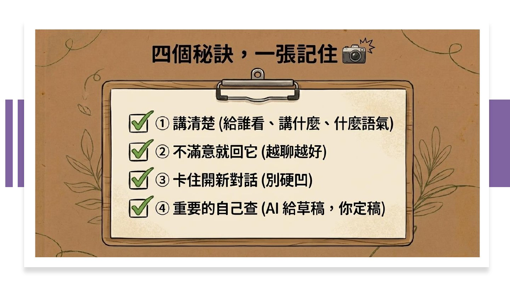
Gemini 這一段，用四個秘訣幫大家收個尾：
一、講清楚（給誰看、講什麼、什麼語氣）；二、不滿意就回它，越聊會越好；三、卡住就開新對話，別硬凹；四、重要的自己查，AI 給草稿，你來定稿。
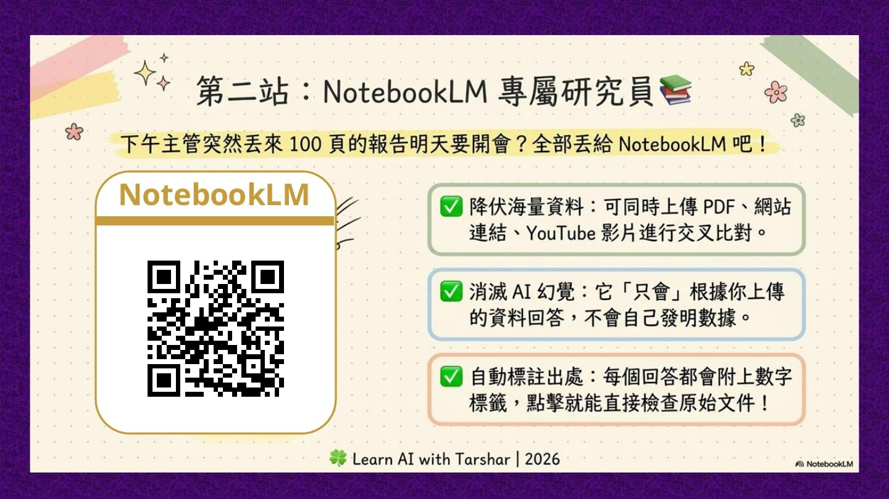
進入第二站，NotebookLM，我把它叫做你的「專屬研究員」。
想像一下，下午主管突然丟給你一份 100 頁的報告，明天要開會。這時候全部丟給它就對了。它能降伏海量資料（PDF、網站、YouTube 都能比對），只根據你上傳的資料回答、不發明數據，而且每個答案都附數字標籤，點開就能檢查原始文件。
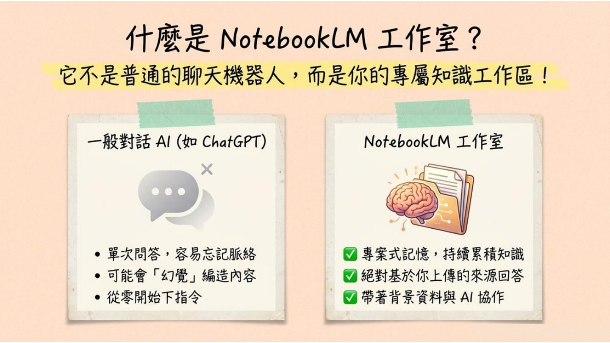
它跟一般聊天機器人差在哪？它是你的專屬知識工作區。
一般對話 AI 是單次問答，容易忘記前面講過什麼、也可能幻覺編造；NotebookLM則是專案式記憶會持續累積、答案一定基於你上傳的來源，你是帶著背景資料在跟它協作。所以它特別適合長檔案、會議錄音、跨文件比對。
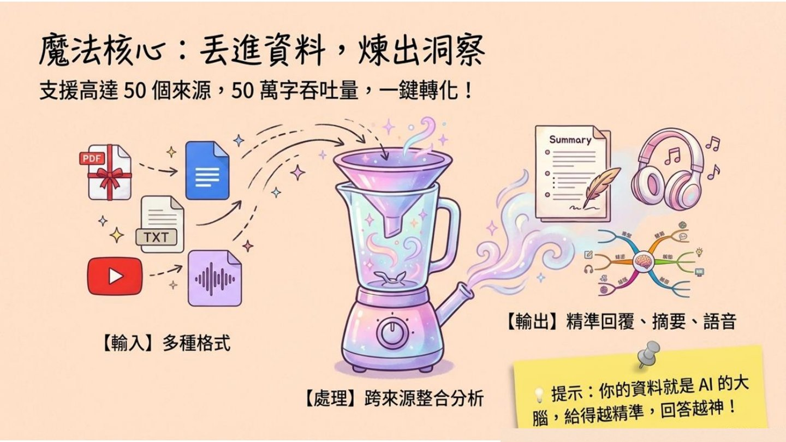
它的魔法核心一句話：「丟進資料，煉出洞察。」
它最多支援 50 個來源、50 萬字。流程就像果汁機：輸入各種食材（PDF、Word、TXT、YouTube、音檔）→處理跨來源整合分析→輸出精準回覆、摘要、甚至語音。記住：你的資料就是 AI 的大腦，給得越精準，回答越神。
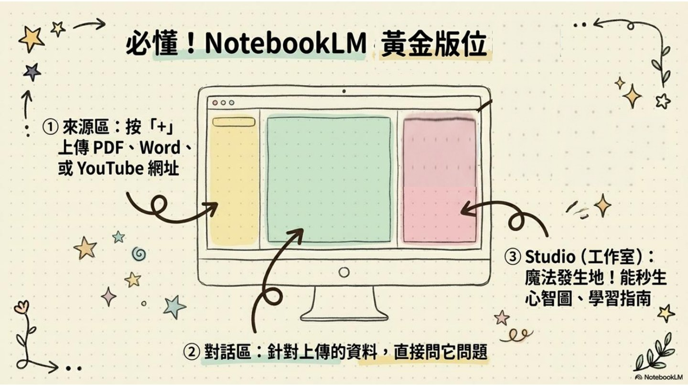
認一下介面，三個黃金版位：
左邊「來源區」：按那個「＋」上傳 PDF、Word，或貼 YouTube 網址。中間「對話區」：針對你上傳的資料直接問問題。右邊「Studio 工作室」：這是魔法發生的地方，能秒生心智圖、學習指南。下一段就帶大家玩 Studio 裡的九大神器。
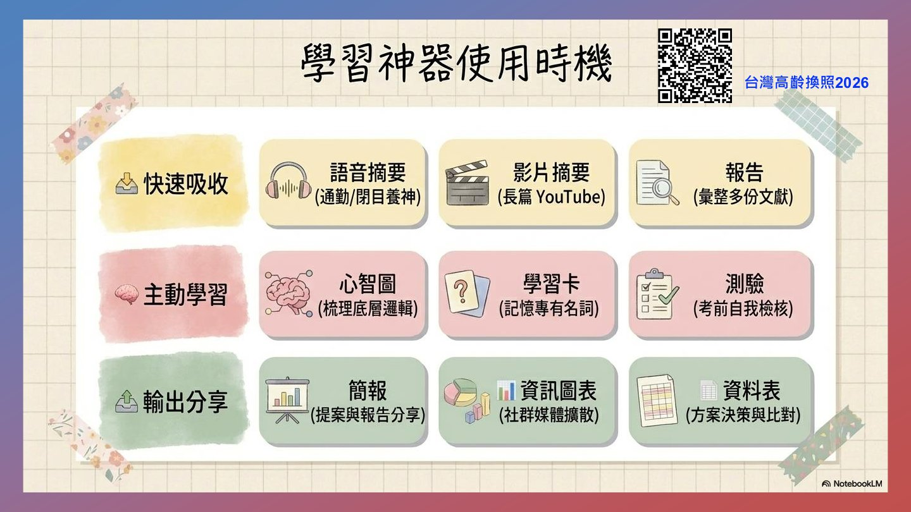
Studio 裡有九種輸出，我用一個九宮格幫大家分成三大用途：
快速吸收：語音摘要（通勤聽）、影片摘要（長 YouTube）、報告（彙整文獻）。主動學習：心智圖（梳理邏輯）、學習卡（記名詞）、測驗（考前檢核）。輸出分享：簡報（提案）、資訊圖表（社群擴散）、資料表（方案比對）。
時間不夠的話，我挑兩三種現場示範就好。
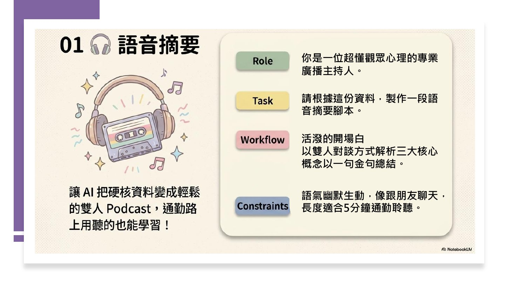
神器一，語音摘要。它能把硬邦邦的資料，變成輕鬆的雙人 Podcast，通勤路上用聽的也能學。
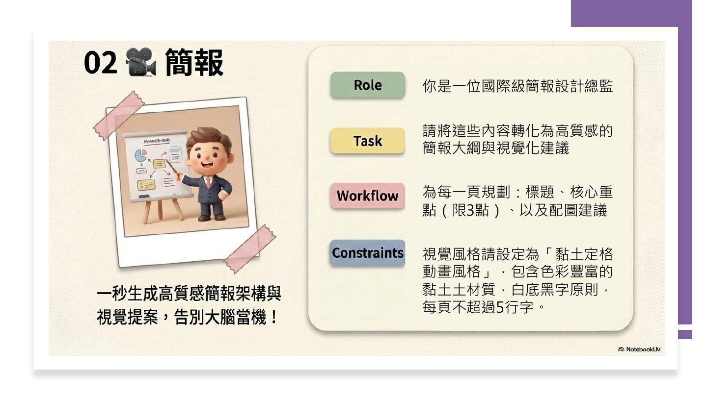
神器二，簡報。一秒生成高質感的簡報架構跟視覺提案，告別做簡報時的大腦當機。
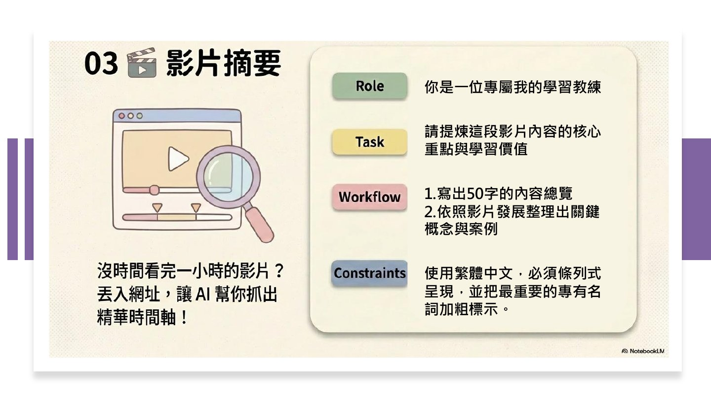
神器三，影片摘要。沒時間看完一小時的影片？把網址丟進去，讓 AI 幫你抓出精華時間軸。
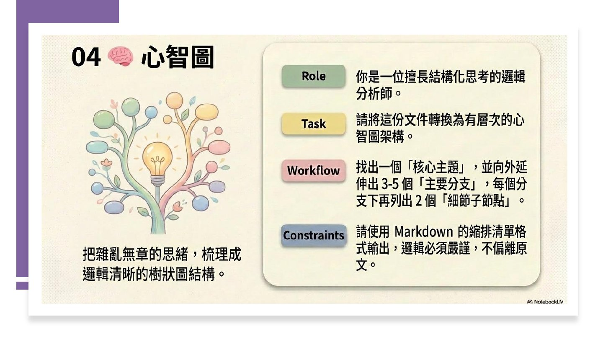
神器四，心智圖。把雜亂無章的思緒，梳理成邏輯清楚的樹狀圖。做讀書筆記超好用。
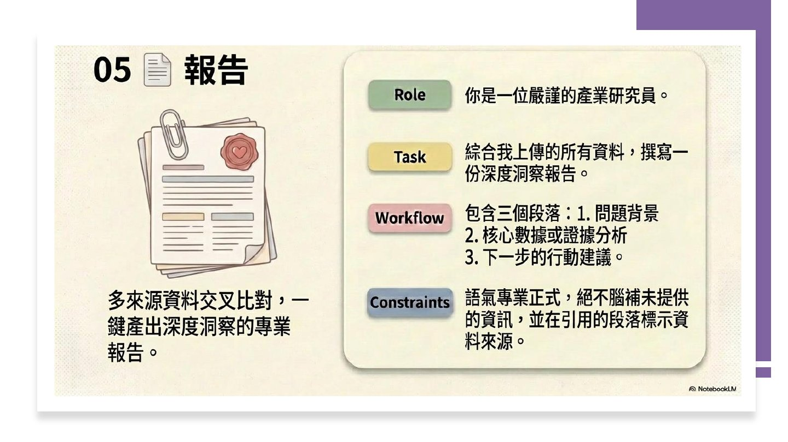
神器五，報告。多份來源交叉比對，一鍵產出有深度洞察的專業報告。
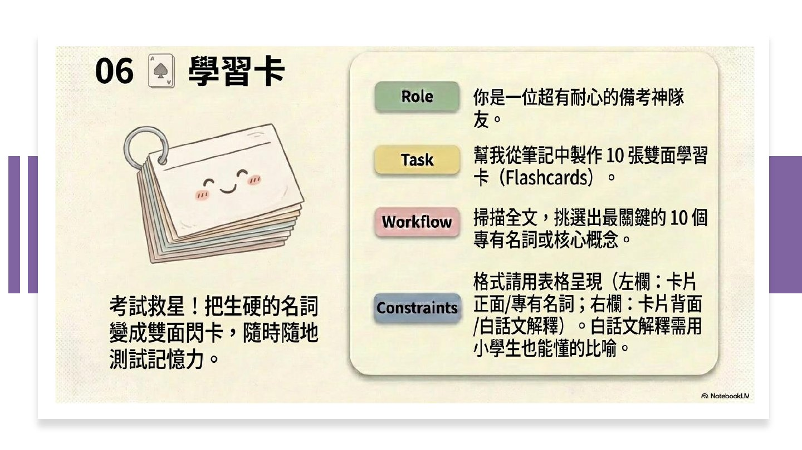
神器六，學習卡，考試救星！把生硬的名詞變成雙面閃卡，隨時隨地測自己記住沒。
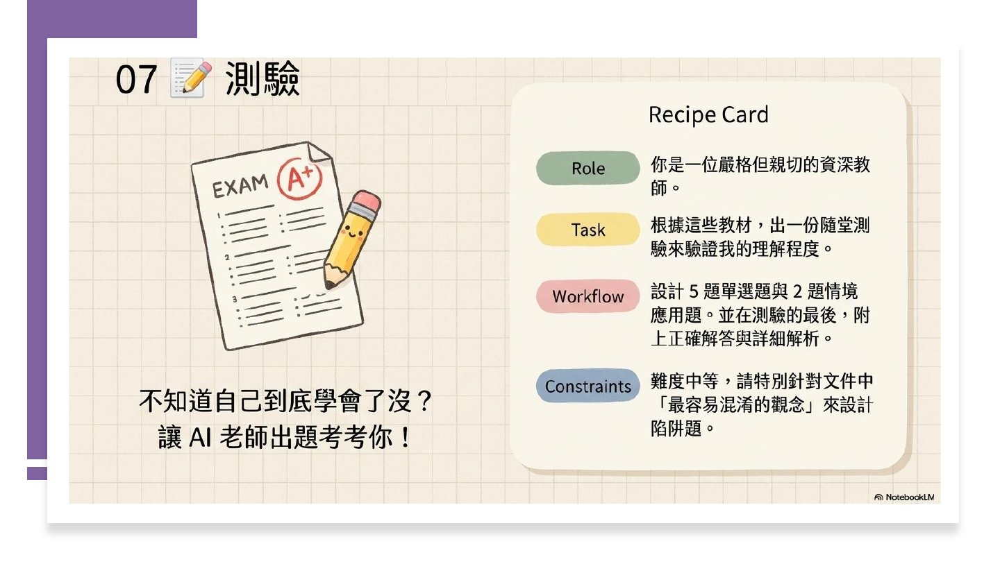
神器七，測驗。不知道自己到底學會沒？讓 AI 老師出題考考你。
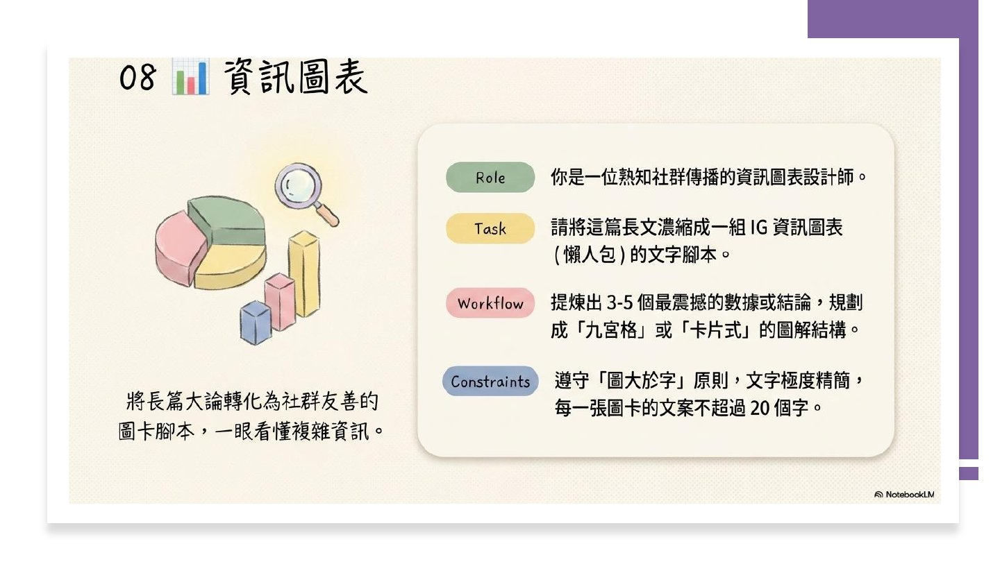
神器八，資訊圖表。把長篇大論變成社群友善的圖卡腳本，一眼看懂複雜資訊。做宣導懶人包很實用。
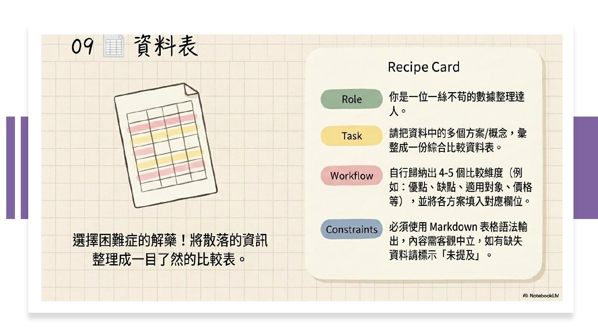
神器九，資料表，選擇困難症的解藥！把散落的資訊整理成一目了然的比較表。
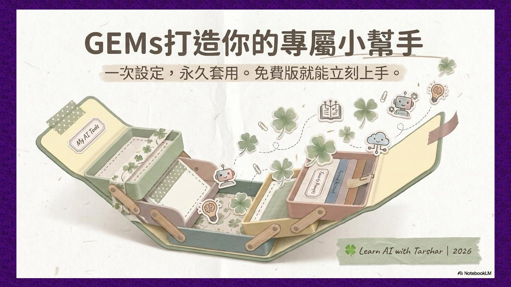
最後的壓軸，也是我最想送給各位的：GEMs，打造你的專屬小幫手。
一次設定，永久套用，而且免費版就能立刻上手。
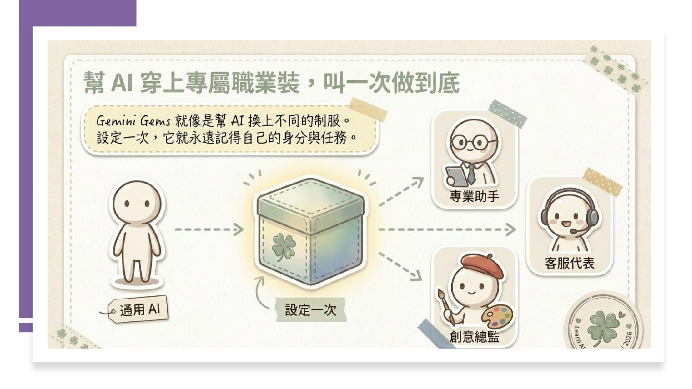
Gem 是什麼？就是幫 AI 穿上專屬的職業裝、叫一次做到底。
你設定一次，它就永遠記得自己的身分跟任務，可以是專業助手、客服代表、創意總監。以後不用每次都重講一遍設定。
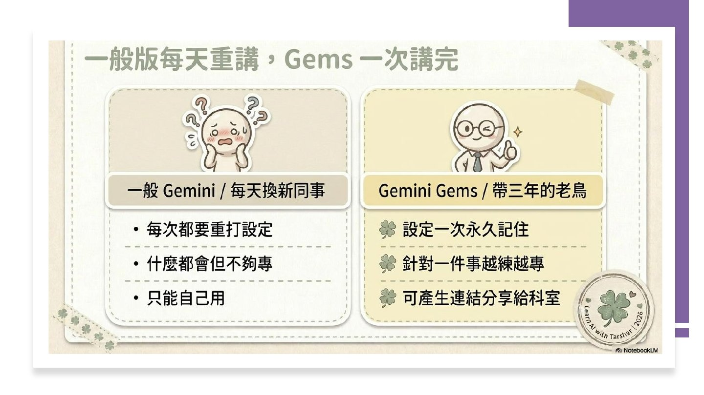
對比一下就很有感：一般 Gemini 像每天換一個新同事，每次都要重打設定、什麼都會但不夠專、而且只能自己用。
Gemini Gems 像帶了三年的老鳥：設定一次永久記住、針對一件事越練越專，最棒的是可以產生連結，分享給整個科室一起用。
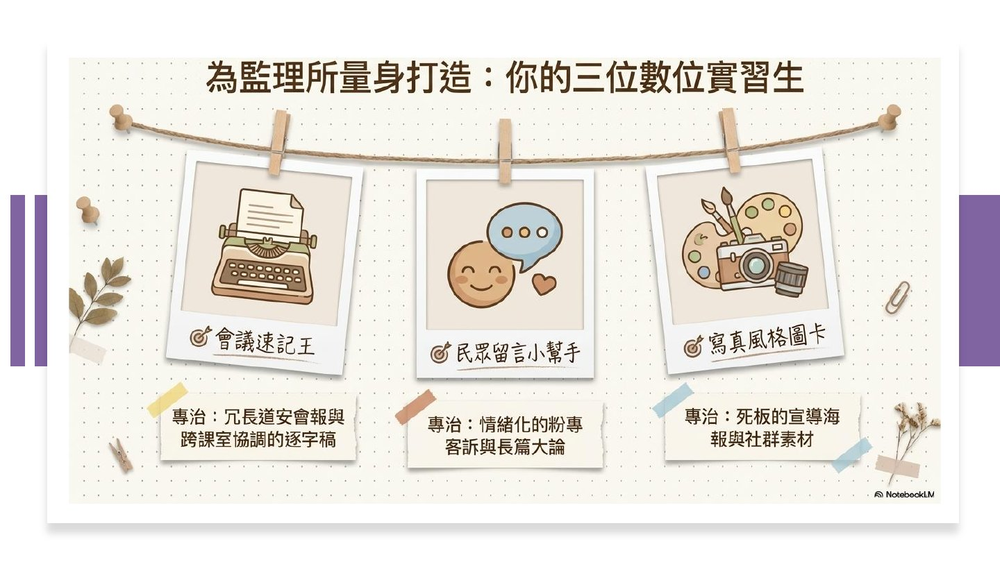
我特別為監理所量身打造了三位數位實習生：
會議速記王：專治冗長的道安會報跟跨課室協調逐字稿。民眾留言小幫手：專治情緒化的粉專客訴跟長篇大論。寫真風格圖卡：專治死板的宣導海報跟社群素材。等等一個一個示範給大家看。
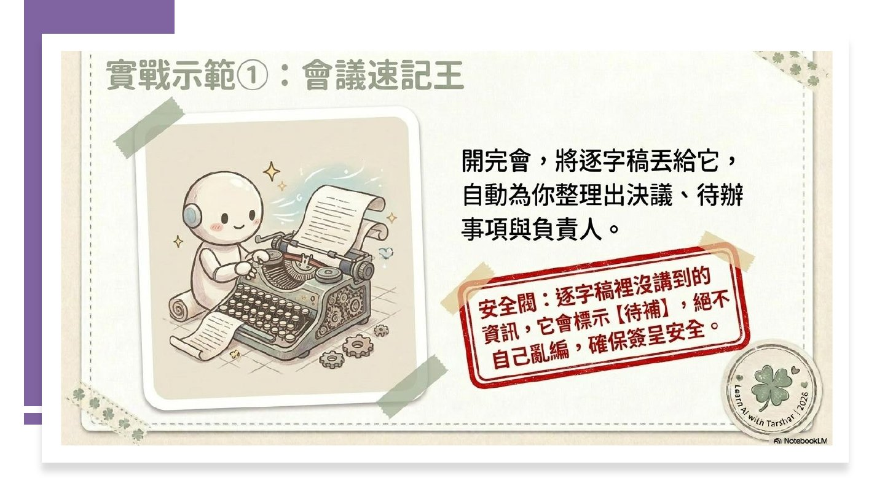
實戰一，會議速記王。開完會，把逐字稿丟給它，它會自動整理出決議、待辦事項跟負責人。
安全閥再講一次：逐字稿沒講到的，它會標【待補】，絕不亂編，確保你的簽呈安全。
實戰二，民眾留言小幫手。面對臉書抱怨，它會先安撫情緒，再分段、結構化地說明處理方式。
安全閥：法規條號、辦理天數、應備文件它會留白標【請承辦填寫】，絕對不要讓 AI 自己辦。
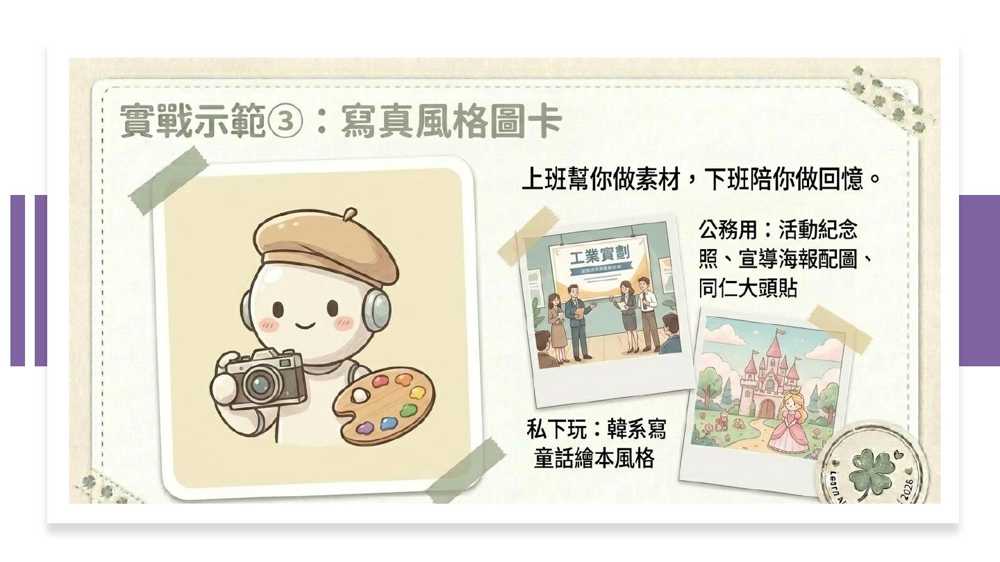
實戰三，寫真風格圖卡。這個最好玩：上班幫你做素材，下班陪你做回憶。
公務用：活動紀念照、宣導海報配圖、同仁大頭貼；私下玩：韓系寫真、童話繪本風格都可以。
要讓小幫手更聰明，什麼時候該開 Pro 模式？
一般模式處理日常小事：潤一句話、查個小資料、簡單翻譯，速度快又省算力。Pro 模式留給複雜任務：分析長篇法規、處理充滿衝突的客訴、多份會議紀錄交叉比對，思考深、不亂編。重要任務才切 Pro，小事別殺雞用牛刀。
學會說話只是第一步，把它存起來，才真的幫你省下時間。
請大家現在拿起手機掃碼，領取你的三個免費小幫手：【1】會議速記王、【2】民眾留言小幫手、【3】寫真風格圖卡。收藏起來，就等於把今天學的存進你的工具箱了。
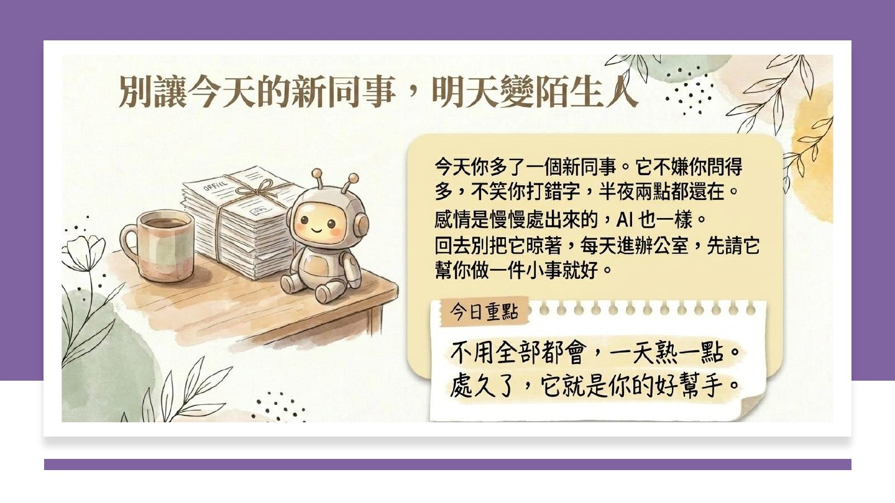
今天，你多了一個新同事。它不嫌你問得多，不笑你打錯字，半夜兩點都還在等你。
感情是慢慢處出來的，AI 也一樣。今天的重點不是全部都會，而是一天熟一點。處久了，它就會變成你真正的好幫手。
今天就到這裡，謝謝蘆洲監理站的每一位夥伴，辛苦了！
記得我們的口頭禪：慢慢來，比較快。我們下次見！
小D｜🍀 Learn AI with Tarshar｜2026